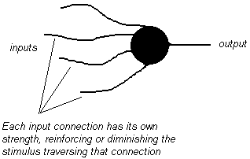
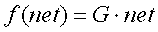
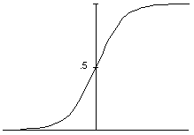
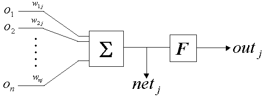

The strength and effectiveness of our brain, is most certainly related to its structure. Brain processing isnt clearly separated among strictly delimited sections, in fact it appears to be distributed among millions of tiny cells called neurons, all working for a collective goal. It is accepted that there are specialized groups of these cells providing for specific tasks (say, a group deals with visual information reaching the brain, another group learns speech recognition and grammatical rules, other groups provide for locomotion and muscle coordination, etc), but even these specialized groups dont have a single cell doing a separate task, but instead a group of cells competing to collectively reach a suitable solution.
If all these cells, somehow act in unison, each of them providing for a small part of the solution, then they must have a way of connecting to each other, so that the overall response can be gathered from the collective effort. In fact we see that this neurons are very simple mechanisms when inspected individually, and their computational power comes from the synergy of a huge number of them, and most important, from the high degree of connectivity between them.
Biological neurons are interconnected by thin filaments, called dendrites. At the extremity of these connections, synapses occur, which are basically electrical bursts neurons can send to increase the stimulus level of the receiving neurons. Each neuron is virtually connected to thousands of others, and can influence the excitatory state of connected neurons by sending higher or lower stimulus over each connection. The state of each neuron is determined by the amount of energy it is receiving at each instant.
The first model of an artificial neuron was proposed by Warren McCulloch and Walter Pitts in 1943. It consisted of a "black-box" with n inputs and a single output. The inputs would be connected to other neuron's outputs, so that each neuron would have n other neurons in its input, feeding it with a combined stimulus. The neuron's single output, would in turn be connected to yet other neurons, which would, as well, gather its input from a number of neurons, and once again present its single output to other neurons inputs.
This turned out to be a very crude model of a real neuron, since the binary nature (they just had an ON or OFF state) of these neurons was far from being a correct approximation of the virtual infinite range of values biological neurons can display.
In an artificial neuron's model, the output level, is determined by two factors:

Basically, each neuron has a threshold value which represents the minimum stimulus it needs to get activated (commonly referred to as firing). If the sum of all input stimulus the neuron receives, times their corresponding connection weights, exceeds some predetermined inertia value, then the neuron will itself output a stimulus burst in its output (the neuron will fire). If the added stimulus stays below that threshold, the neuron will not fire.
The McCulloch-Pitts neuron, being a binary neuron, would fire (output a one), if the weighted sum of its inputs exceeded a threshold, otherwise it would not fire (output a zero). More advanced approaches use continuous neurons, that can take inputs in a range of values (usually 0 to 1, or some symmetric range between -x and +x, with x being an arbitrary small value) and whose output is given by some continuous function usually also ranging from 0 to 1 (see the logistic function below). In any case this is, just to start with, still a huge limitation in comparison with real neurons, whose electro-chemical synapses take a virtually infinite range of values, capable of much finer processing.
The weights, or strengths of each of the connections, are also frequently a real number (a float), and in some optimized algorithms, even a signed integer value (for increased computational speed).
The resulting weighted sum of inputs that we computed for each neuron, is often further processed by an Activation Function, which computes this weighted sum and results in the actual neuron output. This activation function can be a number of things, but its usually either


In both cases, net equals the weighted sum of the neuron's inputs (just so that there are no doubts, it is the activation value of input neuron 1 times the weight of connection 1, plus the activation value of neuron 2 times the weight of connection 2, plus ...)
So I guess we're ready to establish our artificial neuron's model, as

Where:
o(1), o(2), ..., o(n), are the activation values of the neurons connected to this neuron's input
w(1)(j), w(2)(j), ..., w(n)(j), are the respective strengths of each of the connections on this neuron's input (which will be multiplied by the respective output of each of the input neurons)
net(j) is the weighted sum of all the input stimulus, times the respective connection strength, following the formula

out(j) is the actual output of the neuron (its activation) once the sum net(j) has been computed by the activation function, whatever that is.

Previous : Introduction to neural networks
Up: Back to index